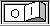

Процедура установки приложения проста. Для установки требуется запустить файл setup.exe и выбрать в появившемся на экране окне устанавливаемые компоненты. Окно установщика показано на рис. 1 (он создан с помощью Nullsoft Install System):
Есть четыре группы файлов, которые можно установить (по умолчанию устанавливаются все):
Помимо выбора устанавливаемых компонентов, установщик также попросит указать целевой каталог, после чего приступит к распаковке архива.
При полной установке в целевом каталоге будет созданы следующие каталоги:
Конфигурационный файл симулятора располагается в каталоге Local Settings\Analiser в каталоге профиля пользователя (Documents and Settings\%USERNAME%\Local Settings\Analiser). Для каждой учетной записи пользователя создается свой конфигурационный файл, таким образом, несколько пользователей используют независимые параметры конфигурации.
Программа не хранит в реестре Windows никаких настроек, так что для ее удаления достаточно удалить ее каталог.
После запуска программы на экране появляется ее главное окно, как показано на рис. 2.
Здесь присутствуют следующие элементы интерфейса:
Большей части команд соответствуют горячие клавиш. Они приведены в таблице:
| Ctrl-N | Создать новый файл схемы | |
| Ctrl-O | Открыть файл схемы | |
| Ctrl-S | Сохранить файл схемы | |
| Ctrl-A | Режим выбора | |
| Ctrl-W | Режим рисования соединений | |
| Ctrl-B | Режим рисования шин | |
| Ctrl-E | Редактирование подписей всех выбранных соединений | |
| Ctrl-D | Удаление всех выбранных соединений | |
| Ctrl-T | Изменить подпись для выбранного элемента | |
| Delete | Удаление выделенного элемента | |
| Ctrl-M | Запустить/остановить симуляцию | |
| Ctrl-P | Пауза | |
| F1 | Вызов справки | |
| F2 | Вызов справки для выделенного элемента |
Программа может работать в двух режимах: в режиме создания схем и в режиме моделирования. В первом режиме разрешены все команды редактирования (добавление элементов, создание шин и соединений, удаление элементов, а также очистка и загрузка схемы). Во втором режиме команды редактирования блокируются, однако возможно сохранение схем, экспорт изображения схемы, изменение настроек программы и изменение свойств элементов (в том числе и при приостановленном моделировании, т.е. в режиме паузы). Переход из режима в режим осуществляется нажатием переключателя  справа на панели инструментов.
Меню «Файл» содержит основные команды ввода/вывода в файлы, а также команду выхода. Его вид показан на рис. 3:
Первая команда в этом меню предназначена для очистки схемы, следующие две – для загрузки и сохранения. Файлы схем имеют расширение .sch и представляют собой документы XML. В них сохраняются описания добавленных элементов и соединений между ними, а также свойства элементов, однако информация о их текущем состоянии (например, состояние регистров процессора во время симуляции) не сохраняется. Исключением здесь является то, что содержимое элементов памяти (ОЗУ 1K, ОЗУ 8К, ОЗУ двухпортовое из плагина "Память, триггеры, регистры") сохраняется в файле схемы, как и состояние блоков переключателей и клавиатур.
Команда «Экспорт схемы в BMP» предназначена для создания файлов изображений схем. При экспорте в файл помещается изображение схемы в ее текущем состоянии (т.е. при моделировании могут быть видны, например, уровни сигналов на контактах).
Также программа предоставляет возможность быстро открыть файлы, которые были открыты недавно ранее. Такие файлы отображаются в группе "Открыть заново".
Меню «Настройка» содержит один-единственный пункт «Параметры». При его активации на экране появляется окно настройки программы, показанное на рис. 4:
Здесь можно настроить некоторые параметры. Первый из них задает время в миллисекундах, на которое поток симуляции "засыпает" (т.е. приостанавливает работу, отдавая процессорное время операционной системе) каждые 10 шагов симуляции. По умолчанию здесь указан ноль (что приводит к отсутствию пауз в симуляции и к максимальной скорости работы), однако можно задать здесь ненулевое значение, чтобы, например, замедлить симуляцию (также при этом упадет и загрузка ЦП).
Второй параметр указывает программе, нужно ли выводить уровни сигналов на схеме при моделировании. Если он включен, процесс моделирования становится нагляднее, однако это приводит к частой перерисовке схемы и, как следствие, к существенному падению производительности. Особенно это ощущается на тех машинах, где нет аппаратного ускорения прорисовки двухмерной графики (например, при использовании обычного контроллера SVGA). Можно задать минимальный интервал времени между обновлениями отображаемых уровней сигналов на схеме. Программа будет стараться перерисовывать элементы не чаще, чем один раз в указанный промежуток времени. Это позволит увеличить производительность за счет более редких перерисовок, однако снизит информативность отображаемых значений уровней. Можно указать здесь ноль для обновления уровней при любом изменении состояния элементов. Следует отметить, что при приостановке симуляции (например, по нажатию кнопки паузы или по срабатыванию элемента останова) схема перерисовывается немедленно, чтобы отразить точно текущее состояние выводов.
Следующий настраиваемый параметр - временной интервал между обновлениями окна предпросмотра. По умолчанию установлен в 1000 миллисекунд.
Четвертым настраиваемым параметром является размер схемы (в пикселях). Этот размер сохраняется в файле схемы. Можно здесь установить большие значения, чтобы увеличить размер рабочего поля. Однако если установить такие значения, что схема в окне программы перестанет помещаться в рабочее поле, программа автоматически расширит рабочее поле.
Также предусмотрена возможности настройки максимального числа сообщений, выводимых в окне сообщений при симуляции. По умолчанию это значение установлено в 1000.
Последним настраиваемым параметром является имя файла отладочного журнала. По умолчанию данный файл называется debug.log и хранится в том же каталоге, что и исполняемый файл симулятора(то же самое происходит в том случае, когда имя файла не указано). Если пользователь введет имя файла, но не укажет путь к нему, то файл журнала с указанным именем будет создаваться в том же каталоге, что и исполняемый файл симулятора. Если же пользователь введет имя файла и укажет путь к нему, то будет создан файл с указанным именем и по указанному пути. Для того, чтобы изменение данного параметра вступило в силу, необходим перезапуск симулятора. Следует отметить, что указание несуществующих каталогов в пути к файлу журнала является недопустимым и приводит к тому, что файл журнала создан не будет.
Меню «Добавить в схему» служит для добавления новых элементов. Его вид может отличаться в зависимости от установленных подключаемых модулей. Например, оно может выглядеть так:
Каждый плагин добавляет сюда свое подменю, которое содержит команды создания для одного или нескольких элементов. Для добавления элемента в схему нужно выбрать один из пунктов в этом меню, после чего курсор мыши изменится (он будет представлять собой значок элемента). После этого нужно нажать левую кнопку мыши в том месте рабочей области, где нужно поместить этот элемент.
Меню «Окна» может содержать разные элементы – это зависит от загруженной схемы. Кроме того, здесь можно открыть окно общего вида схемы (пункт меню "Общий вид"), отображающее всю схему целиком в уменьшенном масштабе с возможностью перемещения по ней, что значительно упрощает навигацию в случае очень большого размера схемы. Например, при работе со схемой, содержащей процессор и логический анализатор, содержимое будет похожим на следующее:
Окна инструментов. Некоторые элементы, например логический анализатор, осциллограф и процессор, при нажатии на них правой кнопки мыши выводят на экран окно, показывающее их текущее состояние (например, осциллограмму). Список таких окон содержится в меню «Окна», откуда можно вызвать любое из них.
Не все элементы добавляют сюда пункты меню. Например, страницы свойств сюда не добавляются. Вообще, сюда должны добавляться окна, несущие информацию о текущем состоянии элемента, например отладчики, окна осциллографов и логических анализаторов и т.д. Следующие модели добавляют пункты меню:
| Элемент | Окно |
| Процессор Intel 8080 | Отладчик |
| Осциллографы и логические анализаторы | Окно вывода графиков |
| Программируемый параллельный интерфейс КР580ВВ55 | Окно состояния (во время симуляции) |
| Контроллер прямого доступа к памяти КР580ВТ57 | Окно состояния (во время симуляции) |
| Контроллер приоритетных прерываний КР580ВН59 | Окно состояния (во время симуляции) |
| Дисплеи | Окно отображения графики |
| Журнал | Окно отображения содержимого журнала |
Здесь также присутствует пункты меню для окна вывода сообщений и окна общего вида. В окне вывода сообщений могут отображаться различные сообщения, например предупреждения, сообщения об ошибках, информационные сообщения различного рода и т.п. Содержимое этого окна в сильной степени зависит как от того, какие элементы входят в схему, так и от выполняемых программ и т.п. Например, это окно может выглядеть так, как показано на рис. 7:
Сообщения поделены на категории (информационные, предупреждения и ошибки), причем плагины могут добавлять свои категории (например, элемент "журнал" из плагина "Служебные элементы"). Есть возможность выбрать отображаемые в окне категории, для этого в окне сообщений нужно нажать кнопку "Фильтр". При этом на экране появляется окно следующего вида (рис. 8):
Меню «Справка» позволяет вызывать справочную систему программы (пункт меню "Справочная система"), небольшую помощь по горячим клавишам (пункт меню "Горячие клавиши"), документацию по микроконтроллерам (пункт меню "Документация"), а также отображать окно с информацией о разработчиках симулятора (пункт меню "О программе"). Кроме того имеется возможность вызова из данного меню формы отчета об обнаруженной ошибке (пункт меню "Сообщить об ошибке"), которая может быть заполнена и отправлена по указанному в ней электронному адресу разработчикам симулятора, что позволит значительно ускорить процесс исправления данной ошибки. Для просмотра справочной системы используется веб-браузер, выбранный в системе как браузер по умолчанию. Для вызова и редактирования формы отчета об ошибке необходимо наличие в системе текстового редактора Microsoft Word (версия не ниже 2003) либо OpenOffice.org Writer (версия не ниже 3.0).
Создание и редактирование схемы выполняется в основном при помощи мыши. При этом редактирование выполняется в одном из трех режимов:
Переключение между режимами осуществляется с помощью соответствующих кнопок на панели инструментов или горячими клавишами.
Нажатие правой кнопки мыши на добавленном элементе открывает окно его свойств. Для некоторых элементов страница свойств может отсутствовать (например, для некоторых индикаторов), а некоторые элементы отображают по нажатию кнопки мыши контекстные меню (элементы памяти) или окна состояния (осциллографы и др.).
Нажатие левой кнопки мыши в режиме выбора выделяет элемент, соединение или шину. После этого выделенный объект можно удалить, переместить (если это элемент) или изменить его имя (если это соединение).
В режиме создания шин нажатие левой кнопки мыши приводит к созданию новой шины. Для того, чтобы создать шину, нужно при работе в этом режиме нажать левую кнопку мыши в точке начала шины и, не отпуская кнопку, перетаскивать мышь, тем самым рисуя шину. Программа позволяет рисовать горизонтальные и вертикальные шины. Чтобы изменить направление шины, нужно при ее рисовании нажать правую кнопку мыши, не отпуская при этом левую.
В режиме создания соединений мышь используется для соединения контактов элементов с шинами. Для этого нужно нажать левую кнопку мыши на контакте элемента и, не отпуская ее, перемещать мышь в сторону шины. Когда мышь окажется на шине, кнопку нужно отпустить, и соединение будет создано. Созданному соединению присваивается имя, отображенное на панели инструментов. Имя задается в поле ввода выпадающего списка имен на панели инструментов: здесь можно ввести новое имя или выбрать одно из перечисленных.
Обратите внимание, что одинаково названные соединения, подключенные к разным шинам, также считаются разными и не соединяются между собой при симуляции.
Режим моделирования.
Перед началом моделирования работы схемы программа перебирает все созданные шины и соединения, объединяя соединения с одинаковыми именами. Затем элементы (точнее, контакты) устанавливаются в свое начальное состояние, после чего запускается цикл, отсчитывающий время и оповещающий элементы о изменениях сигналов на контактах. При этом блокируются возможности редактирования схемы, т.к. на этапе моделирования оно недопустимо.
При моделировании программа может отображать или не отображать уровни сигналов на контактах. Например, в режиме моделирования схема может выглядеть, как на рис. 10.
Пусть требуется, создать устройство, которое поочередно включает один из восьми индикаторов (что-то типа «бегущий огонь»). Это устройство можно реализовать разными способами. Один из вариантов – на основе счетчика и дешифратора: потребуется генератор импульсов, счетчик, дешифратор на 8 выходов, 8 индикаторов и осциллограф для наблюдения временных диаграмм.
Сразу после запуска программа работает в режиме создания схемы. Добавим в схему генератор, счетчик и дешифратор в удобных позициях. Для этого в меню «Добавить в схему» выбираем нужные элементы. После добавления элементов должно получиться нечто похожее на схему, отображенную на рис. 11.
Затем добавляем индикаторы и осциллограф, создаем шины и соединения, используя соответствующие режимы редактирования. При этом понадобится задать имена соединений так, чтобы связать нужные контакты между собой: выход генератора должен быть соединен с входом «C+» счетчика, младшие выходы счетчика соединены с входами дешифратора, а выходы дешифратора – с индикаторами и осциллографом. Кроме того, на входы «C-», «V» и «R» должен подаваться уровень единицы. В результате получаем схему следующего вида (она сохранена в файле tutorial.sch в каталоге examples). В итоге получим схему, похожую на рис. 12.
Наконец, нужно изменить частоту генерации импульсов в генераторе. Для этого нажимаем правую кнопку на его условном обозначении. На экране появляется окно свойств (рис. 13).
Увеличиваем длительности уровней логической единицы и логического нуля в 100 раз. После этого можно запустить моделирование и наблюдать работу схемы.
При симуляции видно, что индикаторы засвечиваются последовательно, один за другим. Задача решена.
Более подробное изучение происходящих в схеме процессов позволяет восьмиканальный осциллограф, который мы предусмотрительно поместили на схему ранее. При нажатии правой кнопки на его условном обозначении на экране появляются построенные осциллограммы (рис. 14).
Симулятор обрабатывает параметры командной строки. Общий формат следующий:
| analiser.exe [--auto-start] [--hide-window] [--close-on-stop] [имя-файла-схемы.sch] |
Все данные параметры являются необязательными (и потому указаны в квадратных скобках).
Если указано имя файла схемы, данный файл будет автоматически открыт при старте симулятора. Это позволяет, например, установить Analiser в качестве приложения по умолчанию для открытия файлов схем в Windows.
Остальные параметры используются в основном для автоматизации тестирования симулятора и имеют следующий смысл:
| --auto-start | Запустить симуляцию автоматически при запуске |
| --hide-window | Свернуть окно симулятора при запуске |
| --close-on-stop | Автоматически завершить работу приложения при остановке симуляции |